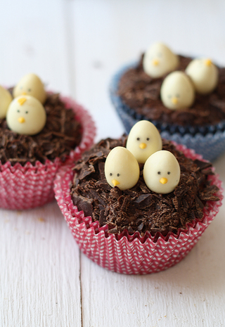
Ais, las pequeñas alegrías de tener hijos… Este fin de semana, Pablo me dijo señalando la báscula: “Mamá, súbete a ver cuánto has crecido!” Me puse casi tan contenta como cuando, estando de vacaciones en Huelva, pasó varios días preguntando: “Mamá, por qué no te peinas?” (debo reconocer que tengo el pelo rizado y al lado del mar siempre parezco recién salida de un casting para la película “El rey León”) . O el otro día, que me dijo: “Mamá, tienes el pelo largo por todas partes”. No, no preguntéis.
El caso es que es verdad que todas las mañanas me subo a la báscula para ver , ejem, cuánto he crecido. Siempre con ese miedo a que un día me diga: “Por favor, suban de uno en uno”. Y reconozco que con la báscula, mi comportamiento no es muy normal….
Me subo. Unos segundos de intriga, mientras la maquinita hace sus cálculos y…
Si he disminuido de peso (Bieeeeeeeeeeeeeeeeeeen!), me bajo rápidamente, antes de que el aparatito cambie de idea (a veces cuando estás un rato arriba empiezan a bailar los números arriba y abajo). Empiezo el día feliz y con la sensación de que la báscula es un invento maravilloso e infalible que hace un gran bien a la Humanidad.
Si en cambio, he engordado… entonces empieza el espectáculo. Primero me subo y me bajo varias veces, para comprobar que no ha sido un error. Pues, no, la maquinita sigue insistiendo en que he engordado medio kilo…
Luego empiezo a pesarme de distintas maneras: pongo más peso sobre un pie, me peso en la parte de delante de la báscula, me peso en la parte de detrás, subo los brazos, aprieto los músculos…Un sinfín de maniobras a ver si consigo bajar el dichoso medio kilo. Con este método como mucho consigo bajar 100 g, creo que básicamente por lo que trabajo en este rato.
Postura para pesarse que siempre adelgaza. 100% Garantizado
Entonces empiezo a tratar de encontrar explicaciones lógicas para los 400 g restantes…Nada que ver con que ayer me comí medio pastel de chocolate, no. Explicaciones lógicas son por ejemplo: “esta mañana me he bebido dos vasos de agua, y claro, eso son 400 ml, que pesan 400 g… “. O “ayer no deseché ninguna hipótesis. Y eso es peso que se lleva encima, claro…
Y cuando no puedo justificar esos gramos de más, ya solo me queda aceptar la evidencia: la báscula se ha quedado sin pilas y no funciona bien.
Y vosotros, le hacéis caso a la báscula? Mientras que lo pensáis, os dejo con una receta para preparar cupcakes de Pascua. Es muy sencilla, y además podéis hacerla con vuestra cualquier receta de magdalenas o cupcakes, como esta de magdalenas con chips de chocolate que os enseñaba hace poco. Os animáis a prepararla?
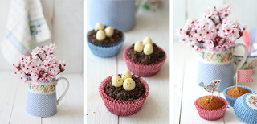
{Cupcakes de Pascua}
Ingredientes
- Para los cupcakes de chocolate blanco (receta de Cupcakes and Fairy Cakes, Women’s Weekly):
- 125 g de mantequilla, en trozos
- 100 g de chocolate blanco, en trozos
- 150 g de azúcar moreno
- 90 g de golden syrup Puede sustituirse por miel, aunque variará el sabor
- 160 ml de leche
- 150 g de harina
- 50 g de harina bizcochona
- 1 huevo
- 12 cucharaditas de nutella
- 100 g de chocolate negro
- 36 huevos de chocolate blanco (o peladillas)
- rotulador comestible negro
- 20 g de chocolate blanco teñido de amarillo, glasa teñida de amarillo, o candy melts amarillos
Para decorar:
Preparación:
- Precalentamos el horno a 170º C y ponemos cápsulas de papel un molde rígido para cucpakes con 12 huecos
- Mezclamos chocolate, golden syrup, leche, mantequilla y azúcar en un cazo, lo ponemos a fuego bajo, removiendo sin cesar hasta que estén integrados. Retiramos del fuego y dejamos enfriar 15 minutos.
- Pasado este tiempo, agregamos las harinas, y removemos
- Añadimos el huevo, y mezclamos bien
- Repartimos la masa entre 12 moldes de magdalena, llenándolos hasta la mitad aproximadamente (es una masa bastante líquida)
- Horneamos unos 20 minutos, y dejamos enfriar sobre una rejilla
- Para decorarlos, comenzamos preparando los pollitos. Con la punta de una brocheta de madera, cogemos un poquito de glasa o chocolate, apoyamos en el huevo y retiramos, para hacer el pico. Dibujamos los ojos con un rotulador. Dejamos secar (con glasa tarda unos minutos, con chocolate o candy melts un poco más, salvo que los metamos en el frigorífico). Una vez listos los “pollitos”, extendemos una cucharadita de nutella sobre cada cupcake. Rallamos el chocolate, con un cuchillo afilado, y lo espolvoreamos por encima de cada cupcake para formar un nido. Colocamos 3 huevopollitos en cada cupcake. A disfrutar!
Preparación: 40 min
Cocción: 20 min
Raciones:12
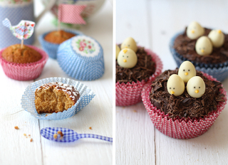
{Easter cupcakes}
Every morning I get on the scale to see “how much I have grown up”, as my 3 year-old son says. Always with the fear it will say: Please only one person at a time!
But despite this scale’s obsession, I still can’t avoid preparing delicious treats from time to time, like these chocolate cupcakes decorated with bird nests. A sweet something might not be always good for your body, but it is sometimes good for the soul!
Ingredients
- For the white chocolate cupcake (from Cupcakes and Fairy Cakes, Women’s Weekly):
- 125 g butter, coarsely chopped (1 stick)
- 100 g white chocolate, coarsely chopped
- 150 g brown sugar (2/3 cup)
- 90 g golden syrup (1/4 cup)
- 160 ml milk (2/3 cup)
- 150 g plain flour (1 cup)
- 50 g self-raising flour (1/2 cup)
- 1 egg
- 12 tsp nutella
- 100 g dark chocolate
- 36 white chocolate eggs (Milkybar)
- edible black pen
- 20 g yellow candy melts
To decorate:
Directions:
- Preheat oven to 375º F (170º C) and line a 12 hole standard muffin pan with paper cases
- Combine butter, chocolate, sugar, syrup and milk in small saucepan, stir over low heat until smooth. Transfer mixture to medium bowl, cool 15 minutes
- Whisk sifted flours into chocolate mixture, then egg. Divide mixture among cases
- Bake for about 20 minutes. Turn cakes onto a wire rack to cool.
- Prepare the little “birds”. Melt candy melts in the microwave, and pipe a yellow beak on each white chocolate egg. Draw eyes with a black edible pen, and let them set. Lightly frost cupcakes with 1 tsp nutella. Using a sharp knife, scrape along the side of room-temperature chocolate, and place chocolate over every cupcake, forming a nest. Place 3 eggs on every cupcake. Enjoy
Preparation time: 40 min
Cooking time: 20 min
Yield:12


")
") 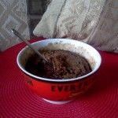
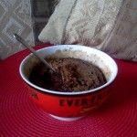

 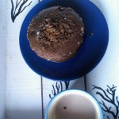
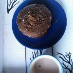 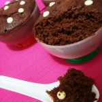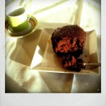
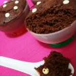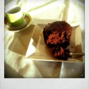


") 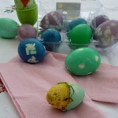
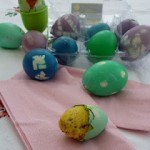


")


") 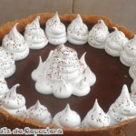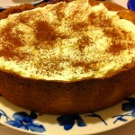
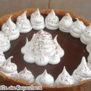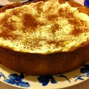